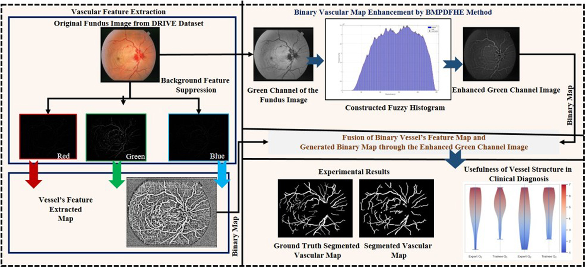
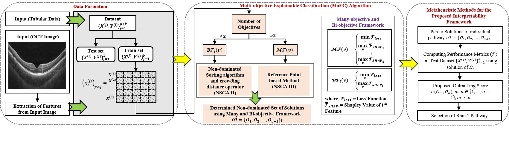

About
I am a Doctoral Researcher working with Prof. Debjani Chakraborty and Prof. Debashree Guha Adhya in the Department of Mathematics at the Indian Institute of Technology Kharagpur. My research focuses on aggregation operators, evidence theory, and multi-attribute group decision-making, with applications in medical image analysis, particularly the analysis of Fundus and OCT images. I also work on explainable multi-objective learning frameworks aimed at developing interpretable and transparent training procedures.
Prior to joining as a researcher, I completed my M.Tech in Computer Science and Data Processing (CSDP) from the Indian Institute of Technology Kharagpur in 2020. During this period, I developed a Bonferroni aggregation operator based image resizing algorithm along with an edge detection framework driven by information fusion operators (aggregation operators) , highlighting the significance of aggregation techniques in advanced image processing.
Research Highlights
- Novel unsupervised method for retinal vascular segmentation using Bonferroni mean pre-aggregation and dynamic fuzzy histogram equalization, enabling accurate extraction of small vessels in low-contrast regions.
- This study proposes an explainable training procedure that consistently minimizes the model's loss and maximizes individual feature importance objectives, improving classification decision-making. It provides an interpretable framework and prioritizes features that positively influence the model's performance


News & Updates
-
June 2026
Paper accepted at International Journal of Systems Science - Inter Observer Variability Assessment through Ordered Weighted Belief Divergence Measure in MAGDM.
-
March 2026
Received Best Paper Presentation Award in ICMOTA 2026.
-
March 2026
Presented at ICMOTA 2026, IIT (BHU) Varanasi, India .
-
Jan 2026
Presented at FSTA 2026, Liptovsky Jan, Slovak Republic .
-
Jan 2026
Paper accepted at IEEE Access — Ranking Feature Importance Objectives for Explainable Classification.
-
Sept 2025
Paper accepted at IEEE Journal of Biomedical and Health Informatics — Bonferroni Mean Pre-aggregation Operator Assisted Dynamic Fuzzy Histogram Equalization for Retinal Vascular Segmentation.